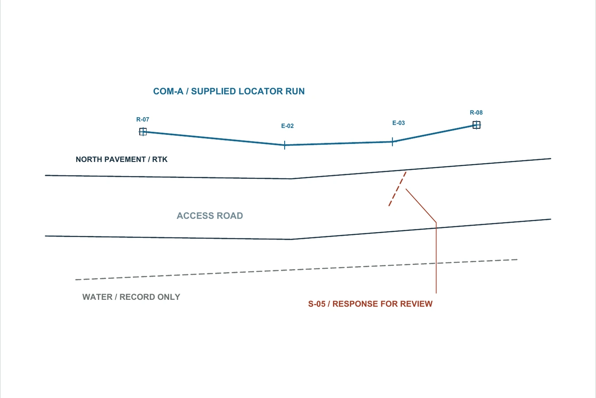

Utility mapping from reviewed records
Draft accepted locator ties and reviewed GPR markups. Keep record-only routes and unresolved observations on distinct layers.
Desktop production for survey and utility teams
Send approved points, utility-locator markups or redlines. Get editable CAD in your layers and blocks, a check plot, and a log of gaps for your reviewer.

Draft accepted locator ties and reviewed GPR markups. Keep record-only routes and unresolved observations on distinct layers.
Plot accepted shots, features, profiles and contours from supplied survey data and build instructions.
Import accepted points, preserve IDs and elevations, and connect coded features using your layers, blocks and field-code library.
Update base drawings from accepted marks, reconcile asset shots to prior records, and return organized files for review.
Your field team supplies accepted observations. The designated professional decides utility identity, depth, source confidence, survey control and boundaries as applicable. The responsible licensed professional reviews and issues any certified survey product.
Choose one redacted sheet or utility segment. Use the same standards you expect on repeat work.
Share your state, file inventory, CAD version and reviewer. We’ll agree on a transfer channel before you share restricted records.
info@skarion.com